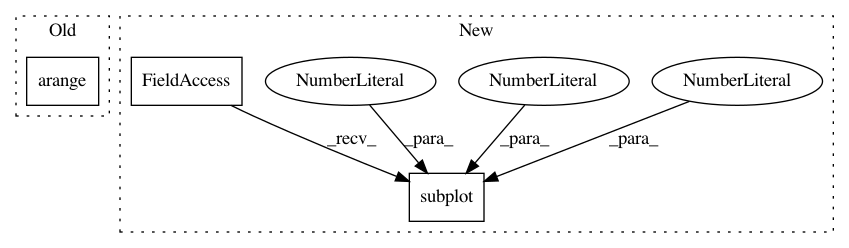

495d64386cb00b6be050475bbff545e0a0115e94,tslearn/docs/examples/plot_lb_keogh.py,,,#,20
Before Change
envelope_down, envelope_up = metrics.lb_envelope(dataset_scaled[0], radius=3)
plt.plot(numpy.arange(sz), dataset_scaled[0, :, 0], "r-")
plt.plot(numpy.arange(sz), envelope_down[:, 0], "g-")
plt.plot(numpy.arange(sz), envelope_up[:, 0], "g-")
plt.plot(numpy.arange(sz), dataset_scaled[1, :, 0], "k-")
After Change
plt.figure(figsize=(14, 4))
plt.subplot(1, 2, 1)
envelope_down, envelope_up = metrics.lb_envelope(dataset_scaled[0], radius=3)
plt.plot(dataset_scaled[0, :, 0], "r-", label="First time series")
plt.plot(envelope_down[:, 0], "b-", label="Lower envelope")
plt.plot(envelope_up[:, 0], "g-", label="Upper envelope")
In pattern: SUPERPATTERN
Frequency: 3
Non-data size: 3
Instances
Project Name: rtavenar/tslearn
Commit Name: 495d64386cb00b6be050475bbff545e0a0115e94
Time: 2020-03-27
Author: johann.faouzi@gmail.com
File Name: tslearn/docs/examples/plot_lb_keogh.py
Class Name:
Method Name:
Project Name: rtavenar/tslearn
Commit Name: ba1182eeaaadb1805319166022128f4823f491f9
Time: 2017-06-22
Author: romain.tavenard@univ-rennes2.fr
File Name: tslearn/docs/examples/plot_kmeans.py
Class Name:
Method Name:
Project Name: rtavenar/tslearn
Commit Name: ba1182eeaaadb1805319166022128f4823f491f9
Time: 2017-06-22
Author: romain.tavenard@univ-rennes2.fr
File Name: tslearn/docs/examples/plot_barycenters.py
Class Name:
Method Name: